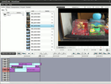
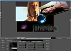
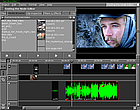

Videobearbeitung
Diese Seite gibt einen Überblick über Software zum Erstellen, Bearbeiten und Verarbeiten von Videomaterial.
Videobearbeitung¶
Da es mittlerweile eine große Anzahl an Programmen gibt, die alle unterschiedliche Funktionen haben – von einem simplen Videoschnitt-Werkzeug für die Urlaubsfilme bis hin zu professioneller Studio-Software – folgt hier ein kleiner Vergleich.
Hintergrundinformationen zum Thema vermittelt der Artikel Grundlagen der Videobearbeitung, reine Umwandlungsprogramme sind unter Videodateien umwandeln zu finden.
| Vergleich | |||||
| Programm | Funktion | Schwierigkeit | Merkmale | Formate | Sprache |
| Avidemux | Schneiden und Konvertieren von Videos | einfach | Schneiden, Konvertieren, Effekte/Filter, Audiospuren hinzufügen, Jobliste, Skripte | AVI, MPEG, MP4, MKV, OGM, ASF |  |
| Blender | Audio-/Video-Bearbeitung | mittel | Bearbeiten von Videos mit mehreren Spuren | alle gängigen |  |
| Cinelerra | Professionelle Videobearbeitungssoftware | schwierig | Capturing, Compositing, Editieren von Audio- und Videodaten | alle gängigen | |
| flowblade | einfaches nichtlineares Schnittprogramm mit großem Funktionsumfang | sehr einfach | Schneiden, Kompositionen, Filter, Rendern | alle gängigen | |
| Jahshaka | Einfaches Videoschnittsystem | mittel | Nichtlineare Videobearbeitung, Effekte | | |
| Kino | Videos vom Camcorder aufnehmen und bearbeiten | einfach | Schneiden, Effekte, Aufnahme | DV über FireWire, andere Formate importierbar | |
| Kdenlive | Mächtiges Videoschnittprogramm, das sich aber einfach bedienen lässt | einfach | Viele Audio/Video-Effekte und Übergänge, Videoaufnahme, Bilder als Diashow zusammenfügen, DVD Export | alle gängigen (ffmpeg) | |
| Lightworks | Professionelle Videobearbeitungssoftware | schwierig | Capturing, Compositing, Editieren von Audio- und Videodaten | alle gängigen | |
| LiVES | Einfache Audio/Video Bearbeitung | mittel | Schneiden inkl. Effekte | alle gängigen (mencoder) | |
| Open Movie Editor | Einfaches Bearbeiten von Videos mit mehreren Spuren | einfach | Schneiden mit Effekten und Übergängen | alle gängigen | |
| OpenShot | Einfaches Bearbeiten von Videos | sehr einfach | Schneiden, Effekte, Übergänge | alle gängigen (ffmpeg) | |
| PiTiVi | Extrem einfacher Videoschnitt, keine unnötigen Funktionen | sehr einfach | Clips importieren und schneiden | alle gängigen (gstreamer) | |

Avidemux¶
Avidemux kann guten Gewissens als die Linux-Antwort auf VirtualDub bezeichnet werden. Zwar kann es nicht alles, was VirtualDub kann, dafür hat es aber auch viele einzigartige Funktionen, die dem Windows-Pendant fehlen. Avidemux kann dazu verwendet werden, digitale Videodateien in fast jedem Format zu laden, zu schneiden und zu speichern. Insbesondere können Dateien im AVI-, MPEG-1 und -2 sowie OGM-Format gelesen und geschrieben werden. Eine breite Palette an Video-Codecs und Audio-Codecs sowie vielfältige Möglichkeiten zum Skripting runden den Funktionsumfang ab. Avidemux besitzt eine grafische Benutzeroberfläche, kann aber auch mit Skripten auf der Kommandozeile arbeiten. Zusätzlich ist eine "Job-Verwaltung" integriert, um Aufgaben zur späteren Verarbeitung in einer Liste zu speichern. Die Audiospur kann getrennt ausgegeben und wieder eingelesen werden. Filter ermöglichen Effekte des Videos.
Blender¶
Blender ist ein Open-Source-3D-Modellierungs- und Animationsprogramm, beinhaltet jedoch auch einen Videoeditor mit Unterstützung für viele Formate und grundlegende Effekte. Das Programm läuft stabiler als viele der anderen Open-Source-Video-Editoren.
Cinelerra¶
Cinelerra ist ein freies, nichtlineares Videobearbeitungsprogramm für das Betriebssystem GNU/Linux. Die drei Hauptfunktionen der Software sind Capturing, Compositing und das Editieren von Audio- und Videodaten. Cinelerra ist enorm leistungsfähig und wegen der Komplexität für den Gelegenheitsnutzer eher nicht zu empfehlen, weil zur Bedienung professionelles Hintergrundwissen und eine solide Einarbeitung notwendig sind.

flowblade¶
flowblade ist ein nichtlineares Videoschnitt-Programm, das Audio- und Videofilter, Überblendungen und Bildkomposition beinhaltet. Es lässt sich sehr einfach bedienen (Video Tutorial ). Alle gängigen Video- und Bildformate werden unterstützt.

Jahshaka¶
Jahshaka ist eine freie und plattformunabhängige Open-Source-Video-Software zur Bearbeitung von Videos. Es bietet ein nichtlineares Videoschnittsystem und unterstützt eine große Palette von Echtzeit-Effekten. Durch OpenGL und OpenML ist Jahshaka einfach auf andere Plattformen zu portieren. Allerdings wurde die letzte Version im Oktober 2006 veröffentlicht.
Kino¶
Kino ist ein einfacher Video-Editor für GNU/Linux, der auch die Möglichkeit bietet, direkt im Programm die Videos vom Camcorder aufzunehmen. Die am Computer bearbeiteten Filme können anschließend auf DVD gebrannt oder zurück auf den Camcorder gespielt werden.
Kdenlive¶
Kdenlive ist ein einfaches, nichtlineares Videobearbeitungsprogramm für GNU/Linux. Man kann mehrere Tracks und Tonspuren bearbeiten und Audio- und Videoeffekte und Übergänge einfügen. Es können auch Bilder zu einer Diashow zusammengestellt werden. Die Videoclips lassen sich zudem einfach schneiden, und die fertigen Projekte lassen sich dank FFmpeg in diverse Formate wie Flash, Quicktime, Mpeg4 oder auch als DVD exportieren. Titel und Menüstruktur für den Export als DVD sind möglich.
Lightworks¶
Lightworks ist ein nichtlineares Videobearbeitungsprogramm, das u.a. für Schnitt und Mastering von Kinofilmen in 2K und 4K wie auch von Fernsehproduktionen in PAL, NTSC und HD in 2D und 3D genutzt wird.
LiVES¶
LIVES (Linux Video Editing System) ist ein Videoschnittprogramm für Linux. Die Software steht unter der GNU General Public License und ist für verschiedene Linux-Derivate verfügbar.

Open Movie Editor¶
Open Movie Editor ist noch einfacher. Alle grundlegenden Bearbeitungsmöglichkeiten auf mehreren Audio- und Video-Spuren sind möglich. Es lassen sich Medien-Dateien diverser Formate im- und exportieren.
OpenShot¶
OpenShot ist ein nichtlineares Videobearbeitungsprogramm mit einer einfachen Bedienung. Der Editor integriert sich sehr gut in Gnome (Drag&Drop wird unterstützt). Titel und Texte können als SVG-Grafik eingebunden werden. Es gibt eine Vielzahl an digitalen Effekten und Übergängen. Es wird u.a. auch die Bluescreen-Technik unterstützt.
PiTiVi¶
PiTiVi, kurz für "Powerful Tool for Video", ist eine noch in der frühen Entwicklung befindliche Anwendung zur Videobearbeitung, die das freie GStreamer-Multimedia-Framework verwendet. Somit können alle Videoformate gelesen oder geschrieben werden, die von GStreamer unterstützt werden, in erster Linie soll jedoch das freie Ogg-Format gefördert werden.
DVB-Transportströme¶
Transportströme oder TS-Dateien erhält man bei der Aufzeichnung von Audio- und Videodaten durch DVB-Geräte oder -Software. Eine Anleitung zum Archivieren dieser Transportströme findet man unter TS-Daten archivieren. Hier folgt nun eine Übersicht über die verfügbaren Programme:
| Vergleich | |||||
| Programm | Funktion | Schwierigkeit | Merkmale | Formate | Sprache |
| Avidemux | Schneiden und Konvertieren | einfach | Schneiden, Konvertieren, Effekte/Filter, Audiospuren hinzufügen, Jobliste, Skripte | AVI, MPEG, MPEG2 TS, ASF | |
| dvgrab | Auslesen von DV-Bändern und Speichern als AVI-Video | Kommandozeile | Auslesen via FireWire (IEEE 1394), aufspalten in mehrere Dateien | dv | |
| DVBcut | Auslesen und Schneiden von MPEG2-Streams (DVB) | mittel | MPEG2 TS | | |
| Kino | Videos vom Camcorder aufnehmen und bearbeiten | einfach | Schneiden, Effekte, Aufnahme | DV über FireWire | |
| ProjectX | Videos aus MPEG2-Transportströmen extrahieren und schneiden (z.B. um eine DVD von VDR TV-Aufnahmen zu erzeugen) | schwierig | Datenströme auf Fehler überprüfen und synchronisieren | MPEG2 TS, Packet Video Audio, MPEG PS, VDR, PES Raw Streams, ES Streams | |

dvgrab¶
dvgrab, das derzeit von den Kino-Entwicklern gepflegt wird, ist ein Kommandozeilenprogramm, mit dem man DV-Bänder auslesen und z.B. als AVI-Dateien speichern kann.
DVBcut¶
Mit DVBcut kann man Teile eines MPEG-2-Stroms (DVB-Format) auswählen und als eine normale MPEG-2 Datei speichern. Weil dabei keine Umkodierung stattfindet, kann Dvbcut dazu benutzt werden, die via DVB aufgezeichneten TV-Sendungen auf DVD zu archivieren.
ProjectX¶
ProjectX ist eine Software zum Schneiden und Trennen (Demultiplexen) eines MPEG-2 Transportstroms in seine Bestandteile (Video-, Audio- und sonstige Daten). Die Software basiert auf Java und ist deshalb theoretisch plattformunabhängig, d.h. sie steht auch unter Windows und Mac OS X zur Verfügung (allerdings nur als Quellcode).
Tipps¶
Titel mit 3D-Effekten¶
Wenn man Titel auch mit 3D-Effekten hinzufügen möchte, geht das mit OpenShot in Verbindung mit Blender 3D vergleichsweise einfach.
 Übersichtsseite
Übersichtsseite- Erstellt mit Inyoka
-
 2004 – 2017 ubuntuusers.de • Einige Rechte vorbehalten
2004 – 2017 ubuntuusers.de • Einige Rechte vorbehalten
Lizenz • Kontakt • Datenschutz • Impressum • Serverstatus -
Serverhousing gespendet von